Lesespur: Auf den Spuren der Alpen – Lesespurgeschichte mit Rätseln (Klasse 5)

Lesespur: Auf hoher See – Lesespurgeschichte mit Rätseln (Klasse 5)

Lesespur: Das Bergwerk: Ein Abenteuer unter Tage – Lesespurgeschichte mit Rätseln (Klasse 5)

Lesespur: Das Brot: Vom Korn zum Brot – Lesespurgeschichte mit Rätseln (Klasse 5)

Lesespur: Das Delta – Lesespurgeschichte mit Rätseln (Klasse 8)

Lesespur: Das Erdbeben – Lesespurgeschichte mit Rätseln (Klasse 9)
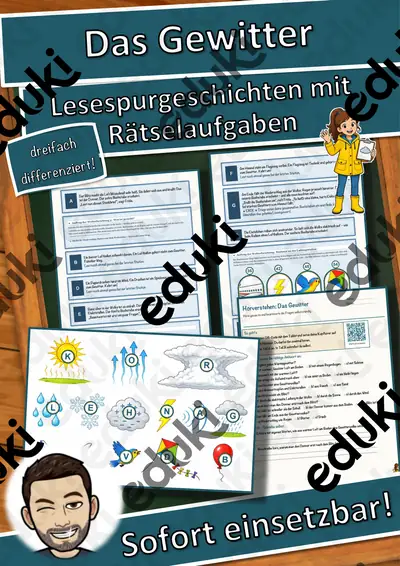
Lesespur: Das Gewitter – Lesespurgeschichte mit Rätseln (Klasse 6)

Lesespur: Das Gewächshaus – Lesespurgeschichte mit Rätseln (Klasse 8)

Lesespur: Das Hochgebirge – Lesespurgeschichte mit Rätseln (Klasse 8)

Lesespur: Das Hochmoor – Lesespurgeschichte mit Rätseln (Klasse 8)
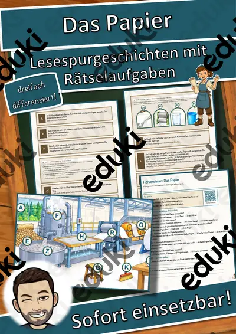
Lesespur: Das Papier: Vom Baum zum Papier – Lesespurgeschichte mit Rätseln (Klasse 5)

Lesespur: Das Planetarium – Lesespurgeschichte mit Rätseln (Klasse 5)

Lesespur: Das Pumpspeicherkraftwerk – Lesespurgeschichte mit Rätseln (Klasse 8)

Lesespur: Das Tiefdruckgebiet – Lesespurgeschichte mit Rätseln (Klasse 8)
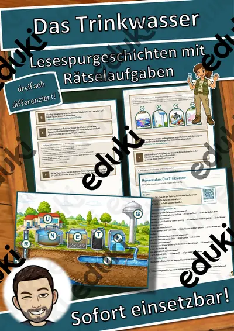
Lesespur: Das Trinkwasser – Lesespurgeschichte mit Rätseln (Klasse 6)

Lesespur: Das Wasserwerk – Lesespurgeschichte mit Rätseln (Klasse 8)

Lesespur: Der Bahnhof: Eine Reise mit der Bahn – Lesespurgeschichte mit Rätseln (Klasse 5)

Lesespur: Der Boden – Lesespurgeschichte mit Rätseln (Klasse 5)

Lesespur: Der Braunkohletagebau – Lesespurgeschichte mit Rätseln (Klasse 8)

Lesespur: Der Brunnen – Lesespurgeschichte mit Rätseln (Klasse 8)

Lesespur: Der Canyon – Lesespurgeschichte mit Rätseln (Klasse 8)
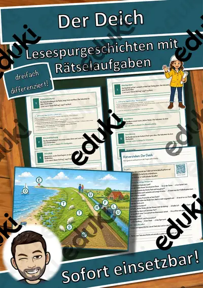
Lesespur: Der Deich – Lesespurgeschichte mit Rätseln (Klasse 8)

Lesespur: Der Eisberg – Lesespurgeschichte mit Rätseln (Klasse 8)

Lesespur: Der Fjord – Lesespurgeschichte mit Rätseln (Klasse 8)

Lesespur: Der Flughafen – Lesespurgeschichte mit Rätseln (Klasse 8)

Lesespur: Der Fluss – Lesespurgeschichte mit Rätseln (Klasse 8)
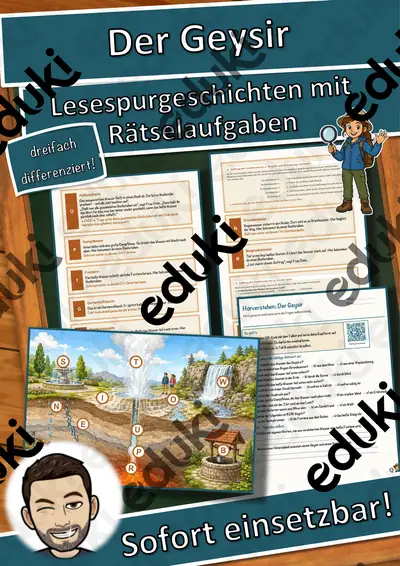
Lesespur: Der Geysir – Lesespurgeschichte mit Rätseln (Klasse 8)
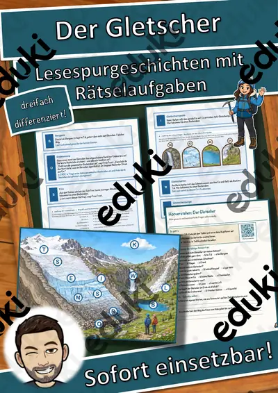
Lesespur: Der Gletscher – Lesespurgeschichte mit Rätseln (Klasse 8)

Lesespur: Der Hafen – Lesespurgeschichte mit Rätseln (Klasse 8)

Lesespur: Der Hurrikan – Lesespurgeschichte mit Rätseln (Klasse 9)

Lesespur: Der Klimawandel – Lesespurgeschichte mit Rätseln (Klasse 8)

Lesespur: Der Kohlenstoffkreislauf – Lesespurgeschichte mit Rätseln (Klasse 9)

Lesespur: Der Leuchtturm – Lesespurgeschichte mit Rätseln (Klasse 8)
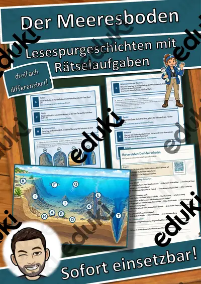
Lesespur: Der Meeresboden – Lesespurgeschichte mit Rätseln (Klasse 8)

Lesespur: Der Mäander – Lesespurgeschichte mit Rätseln (Klasse 8)

Lesespur: Der Mähdrescher – Lesespurgeschichte mit Rätseln (Klasse 8)

Lesespur: Der Nationalpark – Lesespurgeschichte mit Rätseln (Klasse 5)
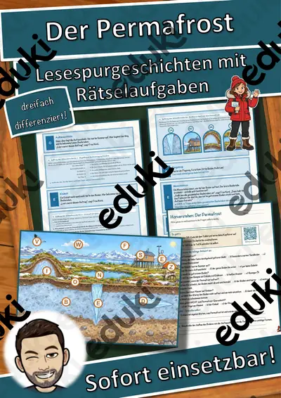
Lesespur: Der Permafrost – Lesespurgeschichte mit Rätseln (Klasse 9)

Lesespur: Der Salzstock – Lesespurgeschichte mit Rätseln (Klasse 9)
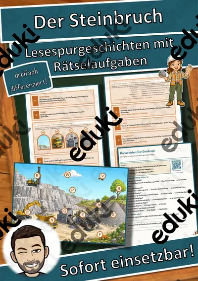
Lesespur: Der Steinbruch – Lesespurgeschichte mit Rätseln (Klasse 8)

Lesespur: Der Tafelberg – Lesespurgeschichte mit Rätseln (Klasse 9)

Lesespur: Der Tagebau – Lesespurgeschichte mit Rätseln (Klasse 9)

Lesespur: Der Treibhauseffekt – Lesespurgeschichte mit Rätseln (Klasse 9)

Lesespur: Der Tsunami – Lesespurgeschichte mit Rätseln (Klasse 8)

Lesespur: Der Tunnel – Lesespurgeschichte mit Rätseln (Klasse 8)

Lesespur: Der Vulkan – Lesespurgeschichte mit Rätseln (Klasse 7)

Lesespur: Der Wasserfall – Lesespurgeschichte mit Rätseln (Klasse 8)
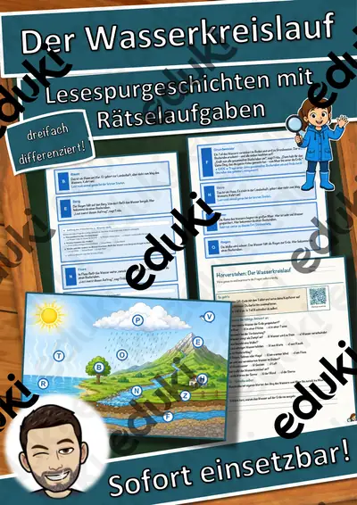
Lesespur: Der Wasserkreislauf – Lesespurgeschichte mit Rätseln (Klasse 6)

Lesespur: Der Wasserturm – Lesespurgeschichte mit Rätseln (Klasse 8)

Lesespur: Der Wettlauf zum Südpol: eine Expedition ins ewige Eis – Lesespurgeschichte mit Rätseln (Klasse 7)
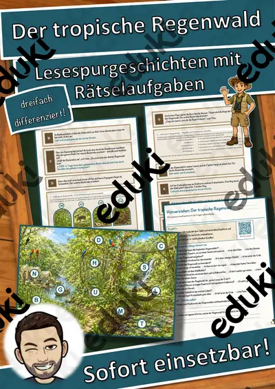
Lesespur: Der tropische Regenwald – Lesespurgeschichte mit Rätseln (Klasse 7)

Lesespur: Die Atmosphäre – Lesespurgeschichte mit Rätseln (Klasse 8)
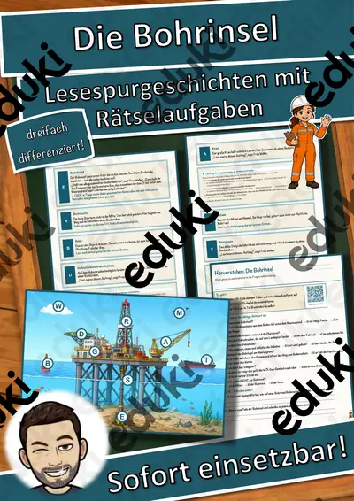
Lesespur: Die Bohrinsel – Lesespurgeschichte mit Rätseln (Klasse 9)

Lesespur: Die Entsalzungsanlage – Lesespurgeschichte mit Rätseln (Klasse 8)

Lesespur: Die Erde – Lesespurgeschichte mit Rätseln (Klasse 8)

Lesespur: Die Gezeiten – Lesespurgeschichte mit Rätseln (Klasse 9)

Lesespur: Die Höhle – Lesespurgeschichte mit Rätseln (Klasse 8)
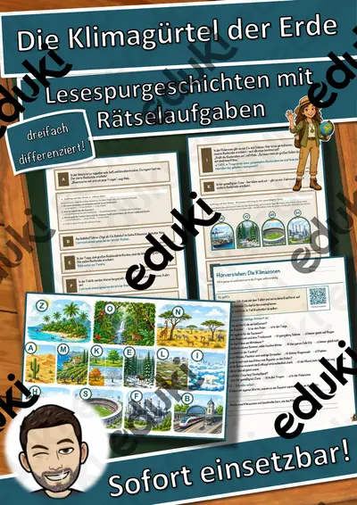
Lesespur: Die Klimagürtel der Erde – Lesespurgeschichte mit Rätseln (Klasse 7)

Lesespur: Die Landwirtschaft – Lesespurgeschichte mit Rätseln (Klasse 7)

Lesespur: Die Lawine – Lesespurgeschichte mit Rätseln (Klasse 8)
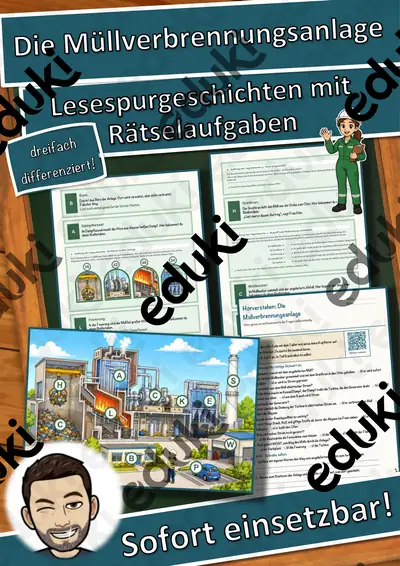
Lesespur: Die Müllverbrennungsanlage – Lesespurgeschichte mit Rätseln (Klasse 9)

Lesespur: Die Oase – Lesespurgeschichte mit Rätseln (Klasse 8)

Lesespur: Die Orientierung: Schatzsuche mit Kompass und Karte – Lesespurgeschichte mit Rätseln (Klasse 5)

Lesespur: Die Plattentektonik – Lesespurgeschichte mit Rätseln (Klasse 9)
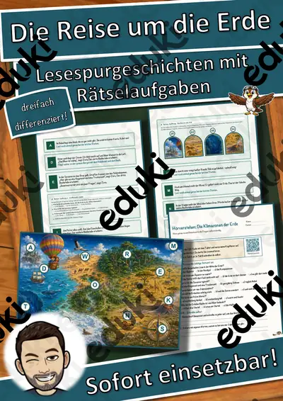
Lesespur: Die Reise um die Erde – Lesespurgeschichte mit Rätseln (Klasse 5)
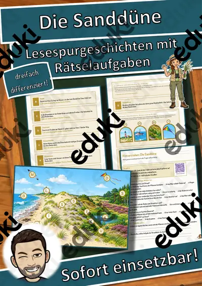
Lesespur: Die Sanddüne – Lesespurgeschichte mit Rätseln (Klasse 8)

Lesespur: Die Savanne – Lesespurgeschichte mit Rätseln (Klasse 8)
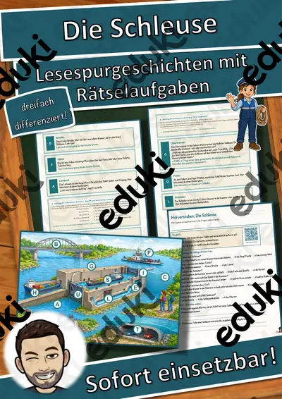
Lesespur: Die Schleuse – Lesespurgeschichte mit Rätseln (Klasse 8)

Lesespur: Die Schlucht – Lesespurgeschichte mit Rätseln (Klasse 8)
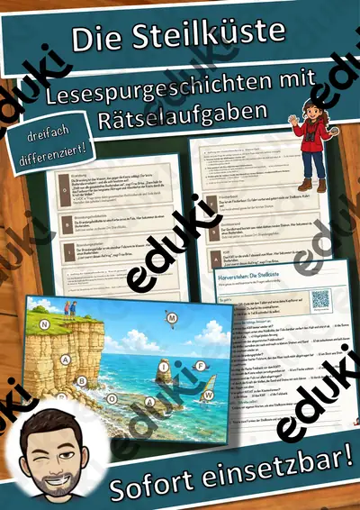
Lesespur: Die Steilküste – Lesespurgeschichte mit Rätseln (Klasse 8)

Lesespur: Die Taiga – Lesespurgeschichte mit Rätseln (Klasse 8)

Lesespur: Die Talsperre – Lesespurgeschichte mit Rätseln (Klasse 8)

Lesespur: Die Tropfsteinhöhle – Lesespurgeschichte mit Rätseln (Klasse 8)

Lesespur: Die Tundra – Lesespurgeschichte mit Rätseln (Klasse 8)

Lesespur: Die Wanderdüne – Lesespurgeschichte mit Rätseln (Klasse 8)

Lesespur: Die Weinlese – Lesespurgeschichte mit Rätseln (Klasse 7)

Lesespur: Die Wetterstation – Lesespurgeschichte mit Rätseln (Klasse 7)

Lesespur: Die Windmühle – Lesespurgeschichte mit Rätseln (Klasse 8)

Lesespur: Die Wolle: Vom Schaf zum Pullover – Lesespurgeschichte mit Rätseln (Klasse 5)

Lesespur: Die große Länderrallye – Lesespurgeschichte mit Rätseln (Klasse 5)

Lesespur: Ein Tag in den Alpen – Lesespurgeschichte mit Rätseln (Klasse 5)
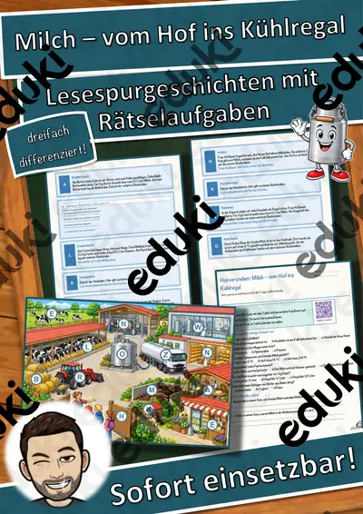
Lesespur: Milch: vom Hof ins Kühlregal – Lesespurgeschichte mit Rätseln (Klasse 6)
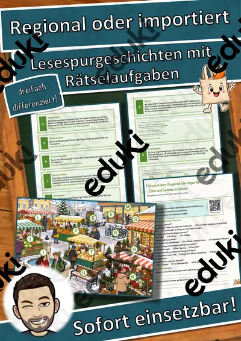
Lesespur: Regional oder importiert: Obst und Gemüse im Winter – Lesespurgeschichte mit Rätseln (Klasse 7)

Lesespur: Weltwassertag: das versteckte Wasser in Alltagsdingen – Lesespurgeschichte mit Rätseln (Klasse 7)
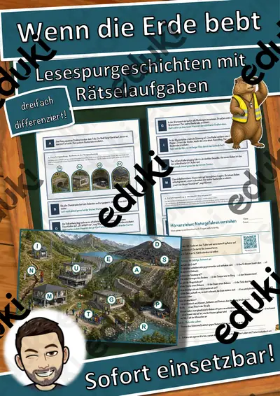
Lesespur: Wenn die Erde bebt – Lesespurgeschichte mit Rätseln (Klasse 6)

Lesespur: Woher kommt mein Spielzeug: die Weltreise eines Spielzeugautos – Lesespurgeschichte mit Rätseln (Klasse 8)

Materialpaket Lesespurgeschichten Erdkunde Klasse 5: 14 Lesespuren mit Rätselaufgaben, dreifach differenziert

Materialpaket Lesespurgeschichten Erdkunde Klasse 6: 5 Lesespuren mit Rätselaufgaben, dreifach differenziert

Materialpaket Lesespurgeschichten Erdkunde Klasse 7: 7 Lesespuren mit Rätselaufgaben, dreifach differenziert

Materialpaket Lesespurgeschichten Erdkunde Klasse 8 – Landschaften und Naturräume: 22 Lesespuren mit Rätselaufgaben, dreifach differenziert

Materialpaket Lesespurgeschichten Erdkunde Klasse 8 – Mensch, Wasser und Wirtschaft: 18 Lesespuren mit Rätselaufgaben, dreifach differenziert

Materialpaket Lesespurgeschichten Erdkunde Klasse 8 – Wetter, Klima und Naturgefahren: 5 Lesespuren mit Rätselaufgaben, dreifach differenziert

Materialpaket Winter für die 9. Klasse: 5 Lesespurgeschichten mit Rätselaufgaben fächerübergreifend (Hungerwinter 1947, Permafrost, Christbaummarkt & mehr)

Materialpaket Winter und Advent für die 8. Klasse: 10 Lesespurgeschichten mit Rätselaufgaben fächerübergreifend (Polarlichter, Streusalz, Krippenbau & mehr)
Lesespurgeschichten im Fach Erdkunde
Die Stationen bilden einen Raum ab – einen Flusslauf, ein Gebirge, eine Anlage. Die Klasse arbeitet dabei mit einem Lageplan und übt, sich in einer Darstellung zu orientieren und Informationen einem Ort zuzuordnen.
Jede Geschichte liegt in drei Niveaustufen vor, die sich in Textlänge, Satzbau und Aufgabenanspruch unterscheiden. Weg, Stationen und Lösungswort bleiben gleich, sodass alle Fassungen gleichzeitig in einer Klasse laufen können.
Themen auf dieser Seite
Beispiele aus dieser Sammlung: Lesespur: Das Brot: Vom Korn zum Brot · Lesespur: Der Fluss · Lesespur: Das Planetarium · Lesespur: Die Atmosphäre · Lesespur: Der Mähdrescher · Lesespur: Das Tiefdruckgebiet · Materialpaket Lesespurgeschichten Erdkunde Klasse 8 · Lesespur: Die Erde.